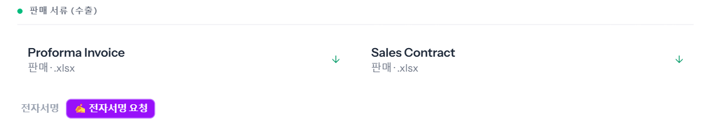
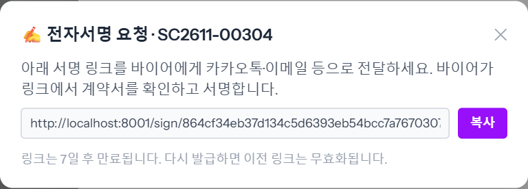
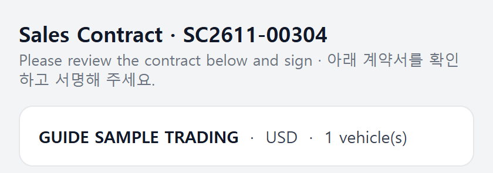
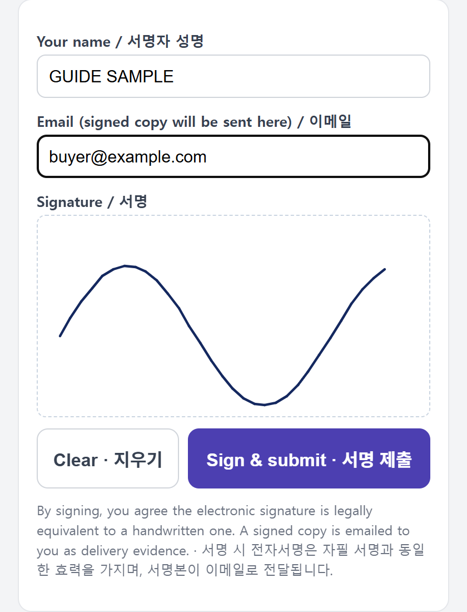
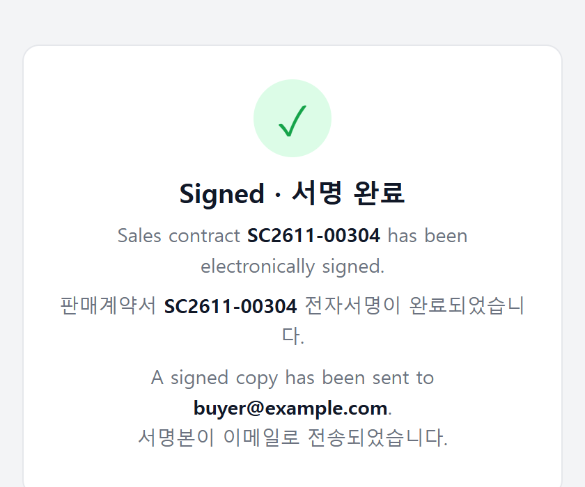
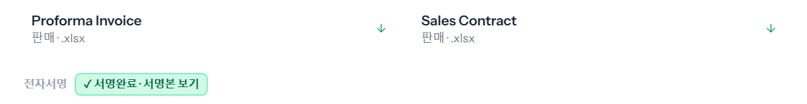

판매계약서를 바이어에게 온라인으로 서명받는 방법입니다. ERP 에서 서명 링크를 만들어 카카오톡 · 이메일 등으로 바이어에게 보내면, 바이어는 로그인 없이 링크에서 계약서를 보고 손가락이나 마우스로 서명합니다. 서명이 끝나면 ERP 에 「서명완료」가 붙고 서명본을 볼 수 있습니다. 예시 차량 00가1131 · 바이어 GUIDE SAMPLE TRADING.

「전자서명 링크를 발급했습니다.」와 함께 링크 창이 뜹니다. [복사]를 눌러 바이어에게 보냅니다. 링크는 7일 뒤 만료되고, 다시 발급하면 전에 보낸 링크는 쓸 수 없게 됩니다.

영어 · 한국어가 함께 나옵니다. 위에 계약번호와 바이어 · 통화 · 대수, 그 아래 계약서 미리보기가 있습니다.

바이어가 이름 · 이메일을 적고 서명 칸에 서명한 뒤 [Sign & submit · 서명 제출]을 누릅니다. [Clear · 지우기]로 다시 쓸 수 있습니다.

제출하면 「Signed · 서명 완료」가 뜨고 서명본(PDF)이 바이어가 적은 이메일로 갑니다.

